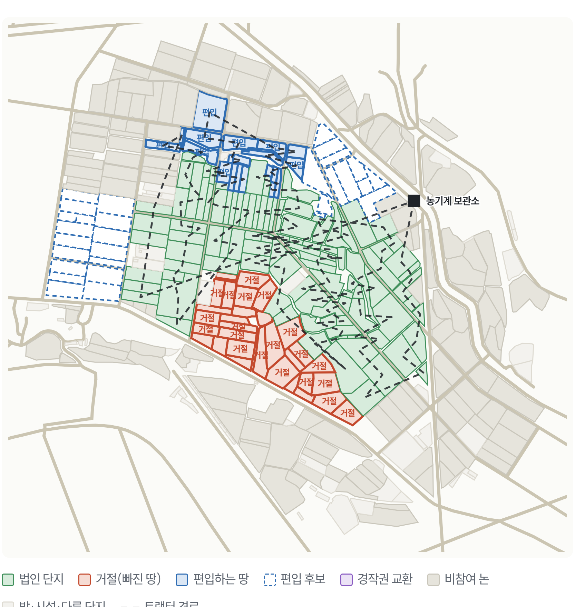
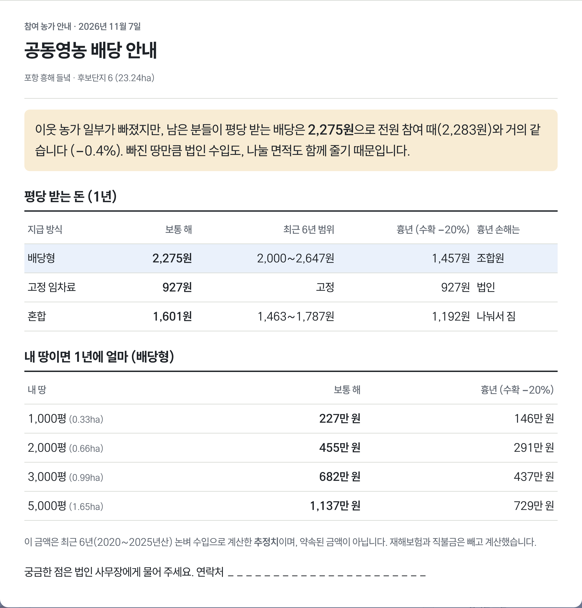

모두의 농장
농가 한 곳이 빠져도,
공동영농은 계속됩니다
거절로 생긴 빈 땅을 1초 만에 다시 설계하는
공동영농 법인의 도우미
판정0.01초 안에 답이 나온다· 20ha 기준 유지 · 설득 1농가
거절 한 건이 공동영농의 문턱이 된다
경북 예비 법인 대표·사무장의 현장10회· 1~1.5년
설명회 횟수와 설득 기간. 거절이 나오면 단지를 다시 짜고 처음부터 다시 연다
문경·영덕 법인 대표 발언, 경주·상주시청 농정과 인터뷰(2026.10)
20ha· 농가 5명
지원 요건. 한 농가만 빠져도 2년 최대 20억 원 지원에서 탈락할 수 있다
농식품부 공동영농 확산 지원사업. 탈락 사유 1위 '집단화 미비·면적 부족'(경주시청)
1,500~4,000원
지구별 평당 배당. 산정 근거가 없어 "내 배당이 얼마냐"에 답하지 못한다
경북 배당 법인 10개소(경북매일 2026.3)
모두의 농장은 세 단계로 답한다
시제품 실행 화면 · 포항 흥해 실측 필지1지도에서 빈 땅을 누른다
거절한 농가의 필지를 누르면 끝이다. 지도 프로그램을 몰라도 되고, 법인 자료 없이 공개 지도만으로 시작한다.

21초 안에 답이 나온다
지원 기준 충족 여부, 법인 순수익, 남은 조합원 평당 배당, 대신 설득할 1순위 땅까지 한 줄로 보여 준다.

3한 장을 뽑아 건넨다
대표 보고용 1장, 남은 농가 설명용 큰 글자 1장. 흉년이면 누가 손해를 지는지까지 적혀 있다.

2,666필지
포항 흥해 들녘 실측 지도로 돌아간다
포항 흥해 들녘 실측 지도로 돌아간다
공개 데이터 3종
팜맵·흙토람·연속지적도, 서버 없이 브라우저에서
팜맵·흙토람·연속지적도, 서버 없이 브라우저에서
서류 3종
한 번의 계산으로 신청서 수치표와 설명 자료까지
한 번의 계산으로 신청서 수치표와 설명 자료까지

시제품 · 소개 자료QR을 찍으면 실행 화면과
설계 근거 문서를 볼 수 있다
누가 쓰나
공동영농 법인을 준비하는 대표와 사무장. 2027년 공모를 준비하는 경북 예비 법인부터 시작한다.
팀 물개한동대학교 · 박서연 · 지예은
다음 단계
- 2026.12예비 법인·교육 참석 농가 전화 인터뷰 5건, 시연 1곳
- 2027.3경북 예비 법인 3곳 무료 설계, 설계 전후 지표 공개
- 2027 하반기보조금 교육·컨설팅 비목으로 첫 유료 계약
화면 수치는 흥해 실측 필지(소유자는 추정)로 계산한 추정치이며 약속된 금액이 아니다.